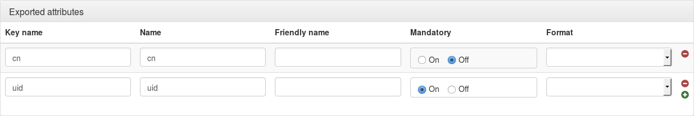

Fournisseur d'identité SAML
Présentation
LL::NG peut agir en fournisseur d'identité SAML 2.0, ce qui permet de fédérer LL::NG avec :
- Un autre système LL::NG configuré avec authentification SAML
- Tout fournisseur de service SAML, par exemple:
| Google Apps | Cornerstone | SalesForce |
|---|---|---|
| | | |
Configuration
Service SAML
Voir le chapître de configuration du service SAML.
IssuerDB
Dans le manager, aller dans Paramètres généraux > Modules fournisseurs » SAML et configurer :
- Activation : mettre à
Activé. - Chemin : laisser
^/saml/sauf si les suffixes des points d'accès SAML ont été modifiés sans la configuration du service SAML. - Règle d'utilisation : une règle pour autoriser l'usage de ce module, mettre 1 pour toujours l'autoriser.
$authenticationLevel > 2
Enregistrer LemonLDAP::NG sur le fournisseur de service partenaire
Après avoir configuré le service SAML, exporter les métadonnéesvers le fournisseur de service partenaire.
Elles sont disponibles à l'URL EntityID, par défaut : http://auth.example.com/saml/metadata.
Enregistrer le fournisseur de service dans LemonLDAP::NG
Dans le Manager, selectionner le noeud Fournisseurs d'identité SAML et cliquer sur Ajouter un IdP SAML.
Le nom de SP est demandé, entrer-le et cliquer sur OK.
Il est ensuite possible d'accéder à la liste des paramètre du SP :
Métadonnée
Il faut enregistrer les métadatas du SP ici. Ceci peut être fait soit en téléchargeant le fichier, soit en l'obtenant par l'URL de métadatas du SP (à condition d'avoir un lien réseau entre le serveur et le SP):

Attributs exportés

Pour chaque attribut, on peut indiquer :
- Nom de clef : nom de la clef dans la session LemonLDAP::NG
- Nom: Nom de l'attribut SAML.
- Nom alternatif: optionnel, nom alternatif de l'attribut SAML.
- Obligatoire : si activé, cet attribut sera envoyé dans les réponses d'authentification. Sinon, il ne sera envoyé dans les réponses que s'il est explicitement demandé dans les requêtes d'attributs.
- Format (optionnel) : format de l'attribut SAML.
Options
Réponse d'authentification
- Format de NameID par défaut : si aucun fiormat de NameID n'est demandé, ou si le format n'est pas défini, ce format de NameID sera utilisé. Si aucune valeur n'est indiquée, le format de NameID par défaut est Email.
- Forcer la clef de session NameID : si vide, la correspondance NameID définie dans la configuration du service SAML sera utilisée. On peut forcer ici une autre clef de session qui sera utilisée comme contenu sde NameID.
- Usage unique : active le drapeau OneTimeUse dans les réponses d'authentification (
<Condtions>). - Durée sessionNotOnOrAfter : durée en secondes, ajoutée à la durée d'authentification, pour définir la valeur sessionNotOnOrAfter dans les réponses SAML (
<AuthnStatement>):
<saml:AuthnStatement AuthnInstant="2014-07-21T11:47:08Z" SessionIndex="loVvqZX+Vja2dtgt/N+AymTmckGyITyVt+UJ6vUFSFkE78S8zg+aomXX7oZ9qX1UxOEHf6Q4DUstewSJh1uK1Q==" SessionNotOnOrAfter="2014-07-21T15:47:08Z">
- Durée notOnOrAfter : durée en secondes, ajoutée à la durée d'authentification, pour définir la valeur notOnOrAfter dans les réponses SAML (
<Conditions>et<SubjectConfirmationData>) :
<saml:SubjectConfirmationData NotOnOrAfter="2014-07-21T12:47:08Z" Recipient="http://simplesamlphp.example.com/simplesamlphp/module.php/saml/sp/saml2-acs.php/default-sp" InResponseTo="_3cfa896ab05730ac81f413e1e13cc42aa529eceea1"/>
<saml:Conditions NotBefore="2014-07-21T11:46:08Z" NotOnOrAfter="2014-07-21T12:48:08Z">
<Conditions>
Signature
Ces options surchargent les options de signature du service (voir la configuration du service SAML).
- Signature des messages SSO : signe les messages SSO
- Vérification de la signature des messages SSO : vérifie la signature des messages SSO
- Signature des messages SLO : signe les messages de déconnexion SLO (single logout)
- Vérifie la signature des messages SLO : vérifie la signature des messages SLO
Sécurité
- Mode de chiffrement : fixe le mode de chiffrement pour cet IDP (None, NameID ou Assertion).
- Activer l'URL initiée par l'IdP : mettre à
Onpour activer l'URL initiée par l'IdP sur ce SP.
- IDPInitiated: 1
- Un parmi :
- sp: identifiant du SP
- spConfKey : clef de configuration du SP
Par exemple: http://auth.example.com/saml/singleSignOn?IDPInitiated=1&spConfKey=simplesamlphp